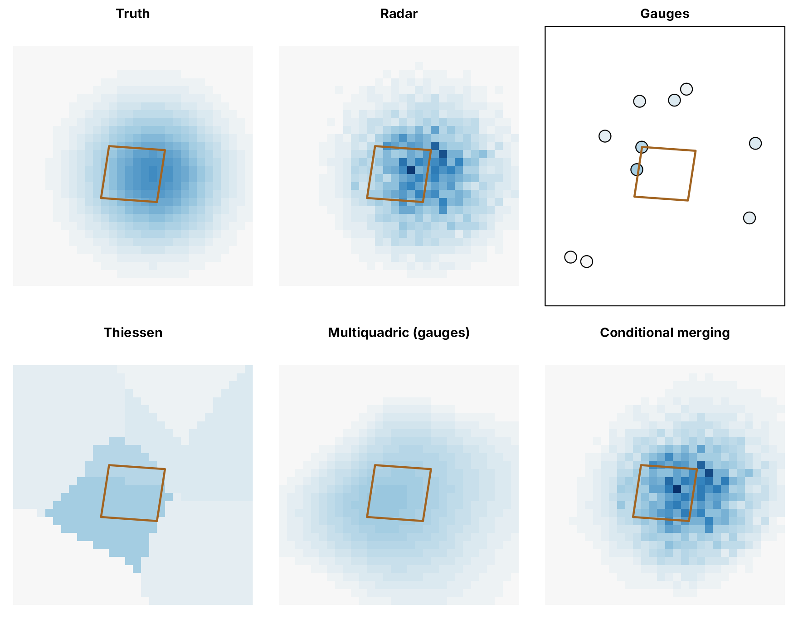
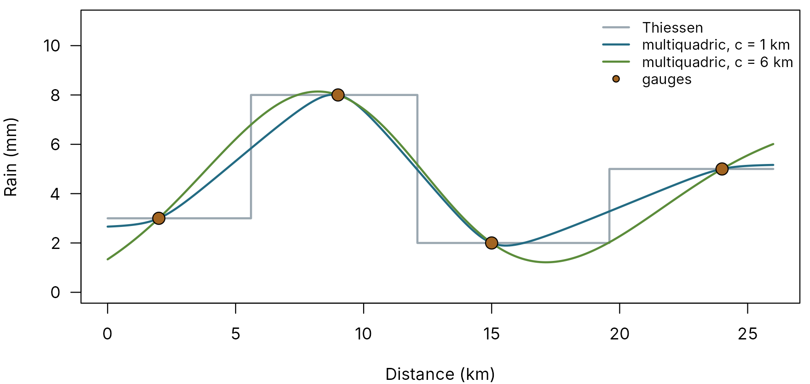
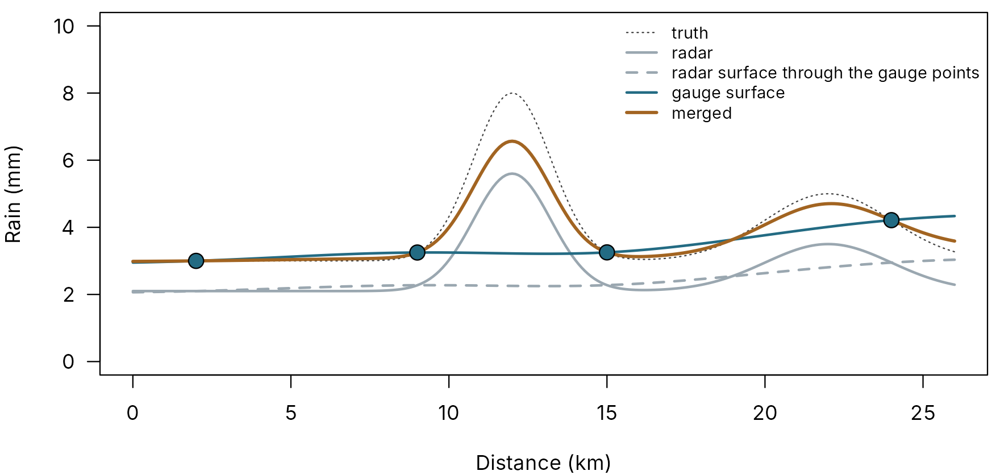
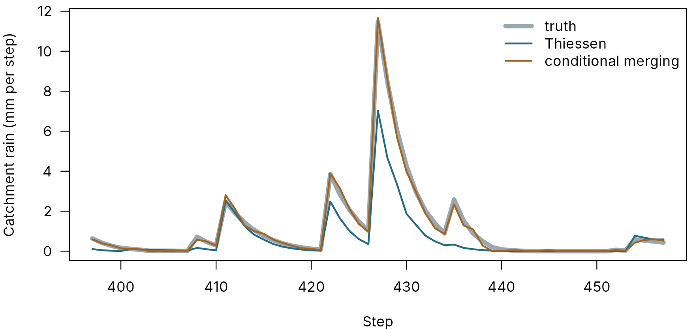

Catchment rainfall from gauges and radar
pdmS7 documentation
Source:vignettes/rainfall.Rmd
rainfall.RmdA rainfall-runoff model can only be as good as the rain it is given. In a small, fast catchment the rain is usually the largest single source of error: a storm the gauges missed produces a flood the model cannot explain, and a storm that happened to sit on one gauge produces a flood the model overstates. No calibration can repair either. The model is bent to fit the wrong rain, and its parameters stop describing the catchment.
This article explains how pdmS7 builds the rain for a catchment from two sources, rain gauges and weather radar, and how to judge which version to trust. It is written for hydrologists: the code shows what is run, but the text stands on its own.
Two imperfect witnesses
Rain gauges measure the amount of rain well, at the point where they stand. A catchment of a few tens of square kilometres may have one or two gauges inside it, and a few more around it. Between them, the rain has to be guessed.
Weather radar sees the whole catchment every few minutes, so it shows where the storm was and how it moved. But it does not measure rain directly: it measures echoes from the beam, which may pass over low rain, be weakened by heavy rain in between, bounce off hills, or be confused by melting snow (the bright band). Its amounts can be wrong by tens of percent, and wrong differently in different places.
The two have opposite strengths: gauges get the amount, radar the pattern. The methods below use one or both.
A made-up storm
So that every method can be checked against the truth, the examples use a made-up catchment of about 40 km2 on a 30 km grid of 1 km cells. Storm cells drift across it over 600 time steps. Ten gauges record the true rain with a small error. The radar sees the true pattern but under-reads by 40% in the west and over-reads by 20% in the east, with noise from cell to cell.
set.seed(4)
grid <- list(x = seq(500, 29500, by = 1000), y = seq(500, 29500, by = 1000))
nx <- length(grid$x)
ny <- length(grid$y)
steps <- 600
gx <- matrix(grid$x, nx, ny)
gy <- matrix(grid$y, nx, ny, byrow = TRUE)
truth <- array(0, c(nx, ny, steps))
for (k in 1:60) {
t0 <- sample.int(steps - 12, 1)
cx <- runif(1, 0, 30000)
cy <- runif(1, 0, 30000)
size <- runif(1, 2000, 6000)
peak <- rexp(1, 1 / 4)
for (s in 0:11) {
truth[, , t0 + s] <- truth[, , t0 + s] +
peak * exp(-((gx - cx - 800 * s)^2 + (gy - cy)^2) / (2 * size^2)) * exp(-s / 4)
}
}
bias <- 0.6 + 0.6 * gx / 30000
radar <- truth * as.vector(bias) * exp(rnorm(length(truth), 0, 0.25))
gauges <- data.frame(id = LETTERS[1:10], x = runif(10, 2000, 28000), y = runif(10, 2000, 28000))
at <- list(i = vapply(gauges$x, function(v) which.min(abs(grid$x - v)), 1L),
j = vapply(gauges$y, function(v) which.min(abs(grid$y - v)), 1L))
gauge_rain <- t(vapply(seq_len(steps), function(t) truth[cbind(at$i, at$j, t)], numeric(10))) *
exp(rnorm(steps * 10, 0, 0.05))
boundary <- data.frame(x = c(11000, 18000, 19000, 12000), y = c(11000, 10500, 17000, 17500))
mask <- catchment_mask(grid$x, grid$y, boundary)
sum(mask)
#> [1] 42catchment_mask() marks the grid cells whose centres lie
inside the catchment boundary, here 42 of them.
Three ways to make the rain field
At each time step, each method builds a rain field over the whole grid; the catchment rain is its average over the cells inside the boundary. The maps show one step in the middle of a storm.
wet <- which.max(vapply(seq_len(steps), function(t) sum(truth[, , t][mask]), numeric(1)))
fields <- list(
"Truth" = truth[, , wet],
"Radar" = radar[, , wet],
"Thiessen" = rainfall_field(gauges, gauge_rain[wet, ], grid, method = "thiessen"),
"Multiquadric (gauges)" = rainfall_field(gauges, gauge_rain[wet, ], grid,
method = "multiquadric", c = 6000),
"Conditional merging" = rainfall_field(gauges, gauge_rain[wet, ], grid,
method = "conditional", c = 1000,
radar = radar[, , wet])
)
top <- max(unlist(fields))
par(mfrow = c(2, 3), mar = c(1, 1, 2, 1))
show <- function(name) {
image(grid$x, grid$y, fields[[name]], col = rain_cols, zlim = c(0, top), axes = FALSE,
xlab = "", ylab = "", main = name, asp = 1)
polygon(boundary$x, boundary$y, border = pal[["orange"]], lwd = 2)
}
show("Truth")
show("Radar")
plot(gauges$x, gauges$y, pch = 21, bg = rain_cols[pmax(1, ceiling(30 * gauge_rain[wet, ] / top))],
cex = 2.4, xlim = range(grid$x), ylim = range(grid$y), axes = FALSE, xlab = "",
ylab = "", main = "Gauges", asp = 1)
polygon(boundary$x, boundary$y, border = pal[["orange"]], lwd = 2)
box()
show("Thiessen")
show("Multiquadric (gauges)")
show("Conditional merging")
One step of the made-up storm. Top: the true rain, the radar, and the gauges’ readings. Bottom: the three methods’ fields. The outline is the catchment.
1. Thiessen polygons
Every cell takes the rain of its nearest gauge. This is how most catchment rain has been built, often with a correction to the catchment’s average annual rainfall (SAAR) to fix the long-term total. It is simple and honest about what the gauges saw. But the field is a patchwork of flat polygons with sudden edges, a storm between gauges is missed entirely, and a storm over one gauge is spread across its whole polygon. A SAAR correction scales every storm alike, so it cannot fix either.
2. A smooth surface through the gauges: multiquadric interpolation
Instead of polygons, fit a smooth surface that passes through every
gauge (Hardy, 1971). The surface is built from one cone-shaped piece
centred on each gauge, added together with weights chosen so that the
surface meets each gauge’s reading exactly. One setting, c,
sets how blunt the cones are. A small value gives a surface that runs
nearly straight from gauge to gauge; a larger one a rounder surface,
which can swing above or below the readings between gauges, as the 6 km
curve does between 15 and 24 km below.
xs <- c(2, 9, 15, 24)
zs <- c(3, 8, 2, 5)
line <- seq(0, 26, by = 0.1)
mq_line <- function(cc) {
pdmS7:::.multiquadric(xs, rep(0, 4), zs, line, rep(0, length(line)), cc, 0)
}
par(mar = c(4, 4, 0.5, 0.5))
plot(line, mq_line(1), type = "n", ylim = c(0, 11), xlab = "Distance (km)",
ylab = "Rain (mm)", las = 1)
lines(line, zs[apply(abs(outer(line, xs, "-")), 1, which.min)], col = pal[["grey"]], lwd = 2,
type = "s")
lines(line, pmax(0, mq_line(1)), col = pal[["blue"]], lwd = 2)
lines(line, pmax(0, mq_line(6)), col = pal[["green"]], lwd = 2)
points(xs, zs, pch = 21, bg = pal[["orange"]], cex = 1.6)
legend("topright", c("Thiessen", "multiquadric, c = 1 km", "multiquadric, c = 6 km", "gauges"),
col = c(pal[["grey"]], pal[["blue"]], pal[["green"]], "black"), lwd = c(2, 2, 2, NA),
pch = c(NA, NA, NA, 21), pt.bg = pal[["orange"]], bty = "n", cex = 0.85)
A cross-section through four gauges (points): the multiquadric surface with a small and a large shape setting, and Thiessen’s steps.
The surface has no sudden edges, and between gauges it slopes from one reading to the next, which is closer to how rain varies. But it is still built from the gauges alone. A storm that fell between them is as invisible to it as to Thiessen.
Choosing c. Leave out one gauge, build
the surface from the other nine, and see how well it predicts the gauge
left out. Do this for every gauge, over many wet time steps, and for
several values of c; the value with the smallest error
wins. rainfall_cross_validation() does exactly this, and
merge_rainfall() uses it to choose c unless
you give one.
3. Gauges for the amount, radar for the pattern: conditional merging
Conditional merging (Sinclair and Pegram, 2005) combines the two witnesses. At each step:
- Fit a surface through the gauges, as above.
- Read the radar in the cells where the gauges stand, and fit a surface through those radar values in the same way.
- Take the radar’s departure from its own surface: the detail the radar sees between the gauges, which a surface through ten points cannot see.
- Add that detail to the gauge surface.
true_line <- 3 + 5 * exp(-(line - 12)^2 / 3) + 2 * exp(-(line - 22)^2 / 8)
radar_line <- 0.7 * true_line
gauge_at <- true_line[match(xs, line)]
radar_at <- radar_line[match(xs, line)]
g_surface <- pdmS7:::.multiquadric(xs, rep(0, 4), gauge_at, line, rep(0, length(line)), 4, 0)
r_surface <- pdmS7:::.multiquadric(xs, rep(0, 4), radar_at, line, rep(0, length(line)), 4, 0)
merged <- pmax(0, g_surface + radar_line - r_surface)
par(mar = c(4, 4, 0.5, 0.5))
plot(line, true_line, type = "l", lty = 3, col = pal[["dark"]], ylim = c(0, 10),
xlab = "Distance (km)", ylab = "Rain (mm)", las = 1)
lines(line, radar_line, col = pal[["grey"]], lwd = 2)
lines(line, r_surface, col = pal[["grey"]], lwd = 2, lty = 2)
lines(line, g_surface, col = pal[["blue"]], lwd = 2)
lines(line, merged, col = pal[["orange"]], lwd = 2.5)
points(xs, gauge_at, pch = 21, bg = pal[["blue"]], cex = 1.6)
legend("topright", c("truth", "radar", "radar surface through the gauge points",
"gauge surface", "merged"),
col = pal[c("dark", "grey", "grey", "blue", "orange")], lty = c(3, 1, 2, 1, 1),
lwd = c(1, 2, 2, 2, 2.5), bty = "n", cex = 0.8)
Conditional merging along a line through four gauges. The radar (grey) sees a storm between the gauges but reads too low. Its own surface through the gauge points (dashed) misses the storm; the difference is added to the gauges’ surface (blue), giving the merged rain (orange).
At a gauge, the merged rain equals the gauge. Between gauges, it keeps the radar’s storm shape, raised or lowered to agree with the gauges around it. In the line above, the storm between the second and third gauges, which no gauge caught, comes through at about four fifths of its true peak, against seven tenths in the radar alone. It does not come through in full because the method corrects the radar’s level from the gauges, but keeps the radar’s own departure from that level: if the radar under-reads the storm itself, part of that remains. It is still far better than either witness alone: the gauges saw nothing of this storm.
Two common cases are handled sensibly:
- The radar shows rain over a gauge that stayed dry. The merged field removes it: the gauge says it did not rain there, so the radar’s echo was false.
- Every gauge is dry but the radar shows a shower between them. The merged field keeps the radar’s shower as it is, since nothing contradicts it.
Rain is never negative: any field is set to zero where a surface dips below it.
Which is best? First, at the gauges
Leaving out each gauge in turn, and predicting it from the rest, measures each method where the truth is known:
checks <- rbind(
rainfall_cross_validation(gauges, gauge_rain, grid, method = "thiessen"),
rainfall_cross_validation(gauges, gauge_rain, grid, method = "multiquadric"),
rainfall_cross_validation(gauges, gauge_rain, grid, radar = radar, method = "conditional")
)
data.frame(method = checks$method, c_km = round(checks$c / 1000, 1),
mean_abs_error_mm = round(checks$mae, 3), rmse_mm = round(checks$rmse, 3),
correlation = round(checks$correlation, 3))
#> method c_km mean_abs_error_mm rmse_mm correlation
#> 1 thiessen NA 0.245 0.752 0.754
#> 2 multiquadric 0.3 0.239 0.675 0.789
#> 3 multiquadric 0.8 0.235 0.670 0.793
#> 4 multiquadric 1.5 0.231 0.664 0.797
#> 5 multiquadric 3.0 0.227 0.654 0.805
#> 6 multiquadric 6.0 0.226 0.640 0.815
#> 7 multiquadric 12.0 0.237 0.631 0.825
#> 8 conditional 0.3 0.097 0.327 0.956
#> 9 conditional 0.8 0.098 0.329 0.956
#> 10 conditional 1.5 0.100 0.334 0.955
#> 11 conditional 3.0 0.104 0.342 0.953
#> 12 conditional 6.0 0.114 0.363 0.948
#> 13 conditional 12.0 0.141 0.442 0.925For the multiquadric methods each row is one value of c,
in km. Conditional merging predicts a left-out gauge with about half the
error of the others, because the radar shows the storm where the gauge
is even when the gauge itself is left out.
Which is best? Over the catchment
The model needs the catchment’s rain, not a gauge’s. Here the truth is known for the catchment too:
true_rain <- vapply(seq_len(steps), function(t) mean(truth[, , t][mask]), numeric(1))
radar_rain <- vapply(seq_len(steps), function(t) mean(radar[, , t][mask]), numeric(1))
thiessen <- merge_rainfall(gauges, gauge_rain, grid, mask, method = "thiessen")
mq <- merge_rainfall(gauges, gauge_rain, grid, mask, method = "multiquadric")
cm <- merge_rainfall(gauges, gauge_rain, grid, mask, radar = radar, method = "conditional")
judge <- function(s) {
c(total_vs_truth = sum(s) / sum(true_rain), correlation = cor(s, true_rain),
rmse_mm = sqrt(mean((s - true_rain)^2)))
}
round(rbind(radar = judge(radar_rain), thiessen = judge(thiessen$rain),
multiquadric = judge(mq$rain), conditional = judge(cm$rain)), 3)
#> total_vs_truth correlation rmse_mm
#> radar 0.920 0.999 0.094
#> thiessen 0.970 0.784 0.693
#> multiquadric 1.032 0.883 0.458
#> conditional 1.012 0.982 0.185
span <- max(1, wet - 30):min(steps, wet + 30)
par(mar = c(4, 4, 0.5, 0.5))
plot(span, true_rain[span], type = "l", lwd = 5, col = pal[["grey"]], xlab = "Step",
ylab = "Catchment rain (mm per step)", las = 1,
ylim = c(0, max(true_rain[span], thiessen$rain[span], cm$rain[span])))
lines(span, thiessen$rain[span], col = pal[["blue"]], lwd = 2)
lines(span, cm$rain[span], col = pal[["orange"]], lwd = 2)
legend("topright", c("truth", "Thiessen", "conditional merging"), lwd = c(5, 2, 2),
col = pal[c("grey", "blue", "orange")], bty = "n")
The catchment’s rain through one wet spell: the truth, Thiessen and conditional merging.
Conditional merging gets both the total (within 1% of the truth) and the timing (correlation 0.98). Thiessen gets a fair total but misses the shape of storms that fell between gauges. The raw radar looks better here than it will in reality: this made-up radar’s only faults are a smooth bias and random noise, which largely average out over the catchment, whereas real radar adds bright band, beam blocking and rain below the beam. Its total is still 8% short, which the gauges correct.
The gauge-only multiquadric surface beat Thiessen on this storm. On other records it may not: without radar, nothing can find a storm the gauges missed, and a smooth surface only improves the guess between storms they did catch.
Which is best? Through the river
The test that matters for the model is the river itself. A river integrates the rain over the whole catchment, so it can say which rainfall series is closer to the truth, even with no truth to hand:
-
Event runoff ratios. For each storm, the quick flow
divided by the rain (from
find_events()). With good rain they vary smoothly with how wet the catchment was. With bad rain they scatter, and some are impossible: more water out than fell, or a large flood from little rain.screen_events()flags the impossible ones. -
Calibration. Calibrate the model once with each
rainfall series, and compare the validation scores and the acceptance
checks (
calibration_checks()). The series the model fits best in years it has not seen, with sensible parameters, is the one to use.
A method that wins at the gauges usually wins through the river too, but not always: the gauges are points, and the river sees everything between them.
With real H19 radar
Gridded H19 radar comes as daily NetCDF files of 15-minute
accumulations on British National Grid, in year and month folders. h19_radar() reads
them: it indexes the time of every layer, crops each file to a box
around the catchment and its gauges, and hands
merge_rainfall() one 15-minute grid at a time, so that
sixteen years of radar never have to sit in memory at once.
files <- list.files("F:/.../04_RADAR/01_H19", pattern = "\\.nc$", recursive = TRUE,
full.names = TRUE)
h19 <- h19_radar(files, extent = c(290000, 330000, 120000, 160000))
h19
boundary <- sf::st_coordinates(sf::st_read("catchment.shp"))[, c("X", "Y")]
mask <- catchment_mask(h19$grid$x, h19$grid$y, boundary)
merged <- merge_rainfall(gauges, gauge_rain, h19$grid, mask, radar = h19$radar,
method = "conditional")
mergedBefore trusting the result:
- Line up the times. Find out whether the radar’s timestamps mark the start or the end of each 15 minutes, and make the gauges’ match. An hour out moves every peak.
- Cover the gauges. The extent must hold every gauge used, with a margin; conditional merging reads the radar at each gauge.
- Use gauges around the catchment as well as inside it, out to 20 or 30 km. A surface needs support on every side.
- Mind the gaps. Where radar is missing (the archive has no 2020, for example), use the gauge-only multiquadric surface for that period, or leave it out of the calibration windows.
- Consider hourly merging. Gauges and radar often disagree on timing within the hour. Merging hourly totals and sharing each hour among its 15-minute steps in proportion to the radar keeps the gauges’ volume and the radar’s timing.
Summary
| Method | Uses | Strength | Weakness |
|---|---|---|---|
| Thiessen | Gauges | Simple, honest at the gauges | Sudden edges; misses storms between gauges |
| Multiquadric | Gauges | Smooth field, honest at the gauges | Still misses storms between gauges |
| Conditional merging | Gauges and radar | The gauges’ amounts with the radar’s pattern | Needs radar, aligned in time, over every gauge |
Build the catchment rain all three ways, judge them at the gauges and through the river, and calibrate with the one that wins. Report which it was.
References
Hardy, R. L. (1971). Multiquadric equations of topography and other irregular surfaces. Journal of Geophysical Research, 76(8), 1905-1915.
Sinclair, S. and Pegram, G. (2005). Combining radar and rain gauge rainfall estimates using conditional merging. Atmospheric Science Letters, 6, 19-22.